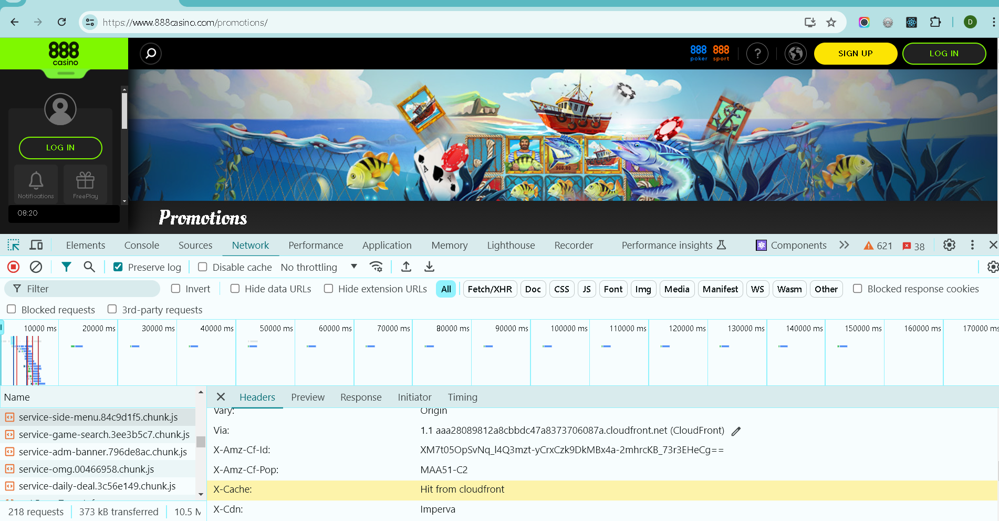

Software Architecture Documentation - 888casino
1. Overview
888casino.com is a popular online gambling platform that offers various casino games such as slots, blackjack, roulette, and live dealer games. To support such a comprehensive platform, 888casino must employ a sophisticated software architecture. Below, I'll explain the potential software architecture that can be incorporated for an online casino platform like 888casino, covering the frontend, backend, CDN, and other essential tools.
2. Frontend Architecture
Technologies used: HTML, CSS, JavaScript (React)
Responsive design and client-side rendering techniques.
3. Backend Architecture
Server-side technologies: PHP/Node.js/Python
Database management: MySQL/MongoDB
Server infrastructure and scalability considerations.
4. CDN and Content Delivery
888 Casino uses various cloud services and CDN
- Amazon CloudFront: A CDN service that delivers content with low latency and high transfer speeds. 
- Cloudflare: Provides CDN services, DDoS protection, and performance optimization.
5. Third-Party Integrations
Payment gateways, analytics, monitoring tools, and other integrations.
https://www.888casino.com/banking/deposit/payment-method/
6. Security Measures
SSL certificates, firewalls, DDoS protection, and data encryption practices.
7. Deployment and Continuous Integration
Deployment tools, version control systems, testing, and QA strategies.
8. Performance Optimization
Techniques for optimizing page load times, resource minification, and image optimization.
9. Scalability and Future Considerations
How the architecture handles scalability and plans for future enhancements.
10. Conclusion
>Suggestions for Enhancing 888 Casino's Features
- 1. Enhanced Personalization AI-Driven Recommendations: Implement AI algorithms to provide personalized game recommendations based on user preferences and past activity. This can enhance user engagement and satisfaction. Customizable User Profiles: Allow users to customize their profiles with avatars, backgrounds, and other personalization options. This can create a more immersive and personalized experience.
- 2. Advanced Loyalty Programs Tiered Rewards System: Expand the loyalty program with more tiers and exclusive rewards. Offer personalized incentives such as birthday bonuses, anniversary gifts, and tailored promotions. Gamification Elements: Introduce gamification elements like achievement badges, leaderboards, and progress tracking. This can motivate users to engage more frequently and achieve higher tiers in the loyalty program.
- 3. Social Features Social Gaming Integration: Enable users to connect with friends, join gaming communities, and participate in social gaming events. Features like friend lists, live chat, and multiplayer games can enhance the social aspect. Live Streaming and Tournaments: Introduce live streaming of games and regular tournaments. Users can watch live games, participate in competitions, and interact with streamers and other players.
- 4. Enhanced Mobile Experience Optimized Mobile App: Continuously update the mobile app to include new features, improved performance, and enhanced graphics. Ensure a seamless experience across different devices. Exclusive Mobile Bonuses: Offer exclusive bonuses and promotions for mobile users to encourage more players to use the app.
- 5. Expanded Payment Options Cryptocurrency Support: Integrate popular cryptocurrencies like Bitcoin, Ethereum, and Litecoin as payment options. This can attract tech-savvy users and provide more payment flexibility. Faster Withdrawal Processing: Implement faster withdrawal processing times, especially for VIP members. Instant or same-day withdrawals can significantly enhance user satisfaction.
- 6. Improved Customer Support 24/7 Live Chat Support: Provide 24/7 live chat support to address user queries and issues promptly. A dedicated support team can enhance the overall user experience. Multilingual Support: Expand customer support to include more languages, catering to a broader international audience.
- 6. Improved Customer Support 24/7 Live Chat Support: Provide 24/7 live chat support to address user queries and issues promptly. A dedicated support team can enhance the overall user experience. Multilingual Support: Expand customer support to include more languages, catering to a broader international audience.
- 7. Advanced Security Features Biometric Authentication: Implement biometric authentication methods like fingerprint and facial recognition for secure and convenient user login. Two-Factor Authentication (2FA): Offer two-factor authentication to add an extra layer of security to user accounts, protecting against unauthorized access.
- 8. Interactive Tutorials and Guides In-Game Tutorials: Provide interactive tutorials for new users to learn how to play various games. These can include video guides, step-by-step instructions, and practice modes. Strategy Guides: Offer comprehensive strategy guides and tips for popular games. This can help users improve their skills and increase their chances of winning.
- 9. VR and AR Gaming Virtual Reality (VR) Integration: Develop VR versions of popular casino games, allowing users to experience an immersive virtual casino environment. Augmented Reality (AR) Features: Introduce AR features that overlay digital elements onto the real world, enhancing the gaming experience on mobile devices.
- 10. Sustainability Initiatives Green Gaming Initiatives: Promote eco-friendly practices such as reducing energy consumption and supporting environmental causes. Highlight these initiatives to attract environmentally conscious users.